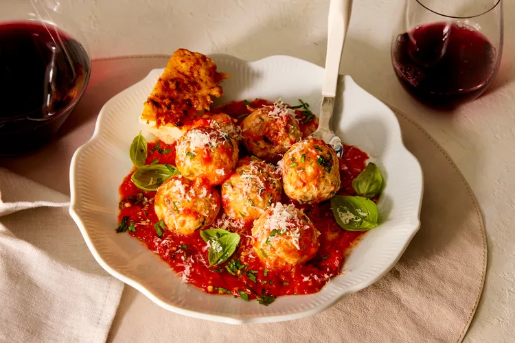

Ricotta Polpette

Ricotta is a soft whey cheese, most often made from
cow’s milk used in lasagna, dips, cheesecakes and
other baking. It is a byproduct of the cheese-making
process. When you make cheese, you separate the curds
and whey, and make cheese from the curds. Ricotta was
traditionally made in Italy from the whey, but is now
often made from whole milk. You can buy ricotta, or
make it at home.
Ingredients
- 2 cups whole-milk ricotta cheese (from 2 [15-ounce] containers), drained
- 1/2 cup chopped fresh basil
- 1 1/2 teaspoons kosher salt
- 1/2 teaspoon black pepper
- 1/2 teaspoon grated garlic (from 2 medium garlic cloves)
- 1 1/4 cups dry breadcrumbs, plus more as needed
Directions
- If ricotta is watery, spoon onto a few layers of
paper towels and spread to an even layer; place
more paper towels on top. Gently press down on
ricotta to remove excess moisture. Remove and
discard top layer of paper towels. Lift paper
towel by the sides and dump ricotta into a large
bowl, using paper towel to shake leftover pieces
of ricotta into bowl. Stir in eggs, Parmesan
cheese, basil, salt, pepper, and garlic until
thoroughly blended and smooth. Stir in breadcrumbs
until combined. (Depending on ricotta, mixture may
be loose but should be able to shape into balls
that hold together. If not, add additional breadcrumbs,
1/4 cup at a time, as needed. )
- Shape mixture into 24 balls (about 2 tablespoons each),
and place on a baking sheet lined with parchment paper.
Refrigerate, uncovered, 1 hour.
- Place garlic, oil, and crushed red pepper flakes in a
small saucepan over medium-low. Once garlic starts to
sizzle, reduce heat to low. Cook, stirring occasionally,
until garlic is tender, 10 to 12 minutes. Remove saucepan
from heat, and mash garlic cloves using a fork. Transfer
garlic mixture to a large Dutch oven, and stir in tomatoes,
basil, water, and salt. Bring to a simmer over medium.
Simmer, stirring occasionally, until slightly thickened,
12 to 15 minutes, reducing heat to low as needed to prevent
boiling.
- Stir Tomato Sauce, and immediately add Ricotta Polpette to
simmering sauce. Cover and reduce heat to low. Cook,
gently shaking Dutch oven occasionally, until polpette are
tender and cooked through, 12 to 15 minutes. Remove from
heat.
- Using a serving spoon, divide polpette and sauce evenly
among 4 shallow bowls. Drizzle with additional oil, and
sprinkle with additional Parmesan cheese. Garnish with
small basil leaves.
Go to home page